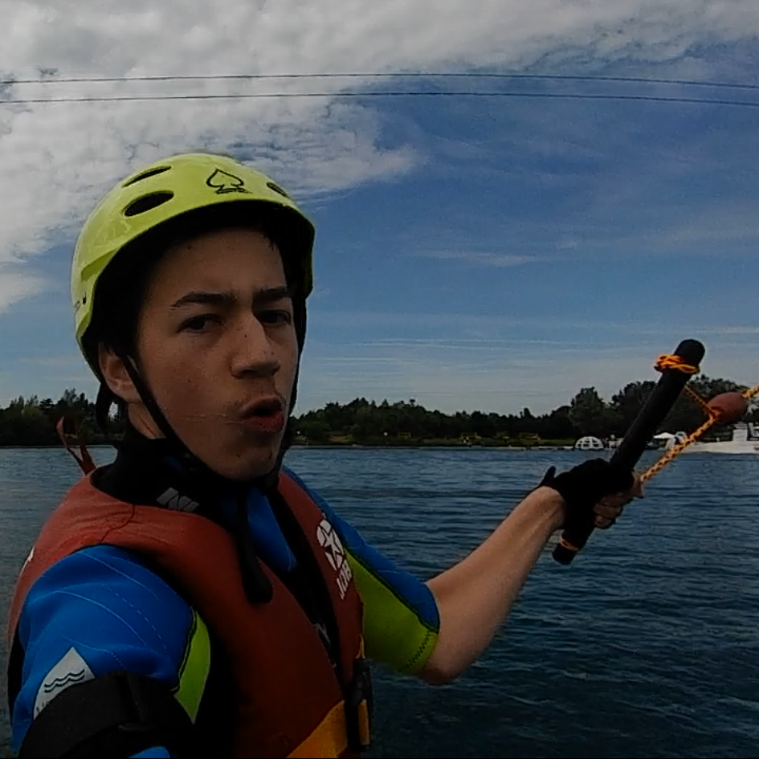

- Startseite
- PC-Kenntnisse
- Schulabschlüsse
- Hobbys
- sozialen Kompetenzen
- Bewerbungsunterlagen downloaden
- Kontakt
Herzlich Willkomen auf meiner Bewerbungswebseite
Ich bin Johannes Georg Müller

Meine PC-Kenntnisse

Schulabschlüsse
| 2020-2022 | Fachabitur
Schwerpunkt Wirtschaft& Verwaltung Konrad-Adenauer-Schule, Kriftel |
|---|---|
| 2014-2020 | Elisabethenschule (Realschule) Hofheim am Taunus |
Hobbys (Schwerpunkte)
Bitte mit der Maus über die Bilder fahren

Meine sozialen Kompetenzen
Umfragen bei Freunden und Familie zufolge,bin ich empathisch, offen,vielseitig interessiert
und sozial engagiert.
Aber machen Sie sich am besten selbst ein Bild von mir
und laden Sie mich zu einem Vorstellungsgespräch ein.
Kontakt
Johannes Georg Müller
Kurpfalzstraβe 154
67435 Neustadt an der Weinstraβe
Tel: 0163/2055604
johannes.g.mueller@gmx.de